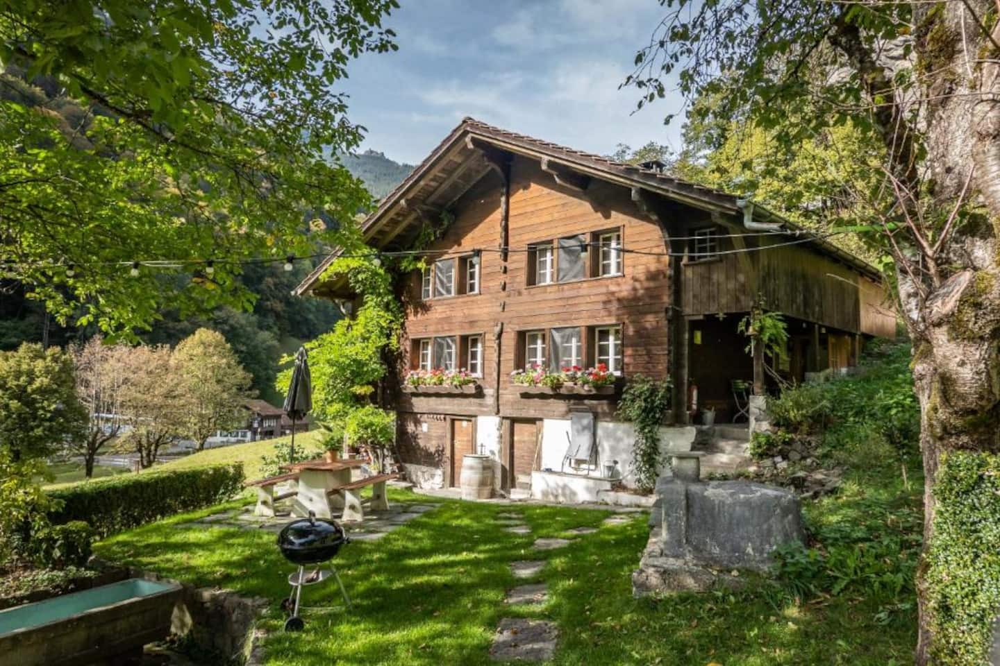
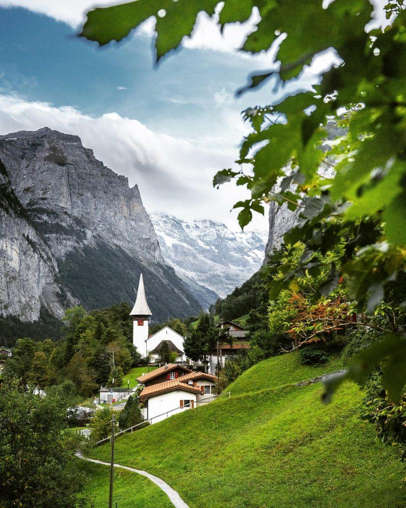

YOUR OWN LITTLE CORNER OF THE SWISS ALPS
A little closer
to nature.
Slow mornings. Alpine air. A place to simply be.
Welcome to Chalet Elza, Lauterbrunnen.
Make yourself at home.
OLD SOUL. EVERYDAY COMFORT.
Stay a while.
Feel a world away.
A timber chalet, a quiet garden, and the mountains just beyond your window. Apartment 2 brings the character of a Swiss mountain home to your days in Lauterbrunnen.
Settle into your own two-floor apartment, share a leisurely meal, then head out and follow the valley. There’s no need to rush here.
Take a look inside ↗A CLOSER LOOK
Room to unwind.
Natural wood. Soft light.
The simple pleasures of being here.

LAUTERBRUNNEN, BERN, SWITZERLANDSTEP OUTSIDE. LOOK UP.
Some places
stay with you.
Follow the river, wander beneath the cliffs, or make a day of the mountains. Let Lauterbrunnen set the pace.
A walk into the village
800 metres to the village centre.
Follow the falling water
Staubbach Waterfall, 1.9 km from the chalet.
Find your own adventure
Hiking, cycling and alpine days out.
A LITTLE PEACE OF MIND
Before you
arrive.
Hosted by Patricia and Dave.
A personal welcome to the valley.
What’s included in the apartment?
Two bedrooms, three beds, a bathroom, a living space and an equipped kitchen. Wi-Fi, linens, towels and on-site parking are included. The sauna is shared.
How do we check in?
Self check-in is available using a lockbox. Confirm arrival times and access instructions with Patricia and Dave through Airbnb before travelling.
Is the apartment suitable for our group?
Apartment 2 accommodates up to four guests and is spread over two floors. If stairs or specific accessibility requirements affect your stay, ask the hosts before booking.
How do pricing and reservations work?
Choose your dates above to check live availability on Airbnb. Prices, fees, house rules and cancellation terms are shown there before you reserve.
TRADE THE EVERYDAY FOR THE ALPINE
Your mountain chapter
starts here.
Find your dates ↗Chalet Elza · Apartment 2 · Lauterbrunnen